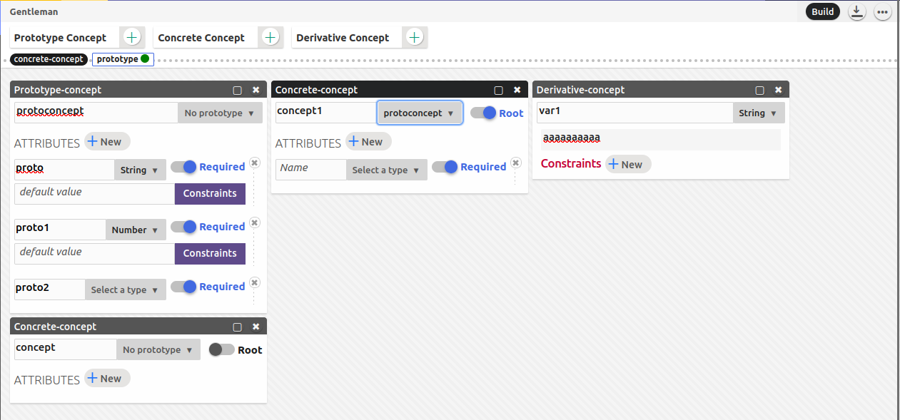
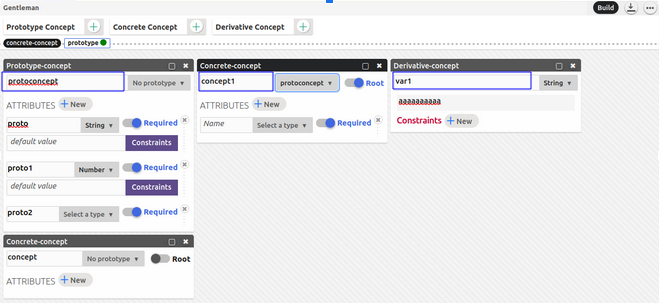
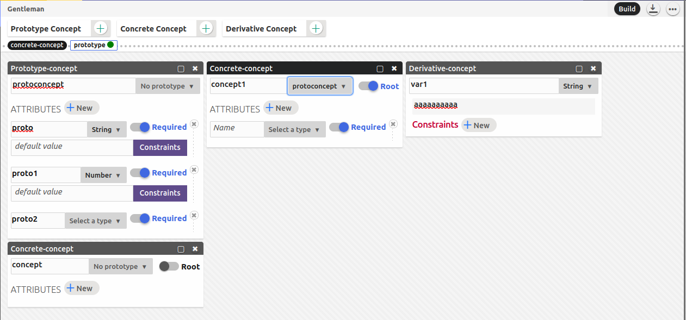
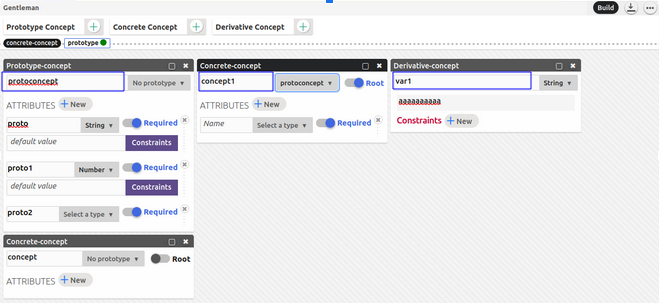
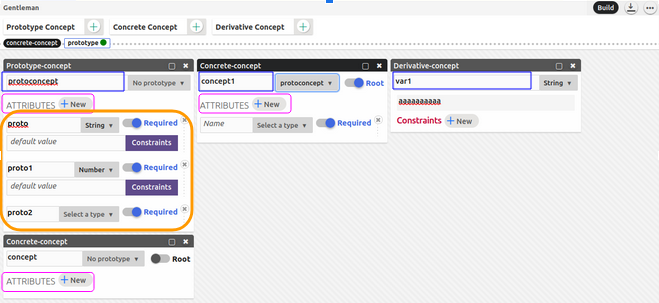
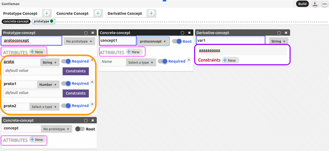
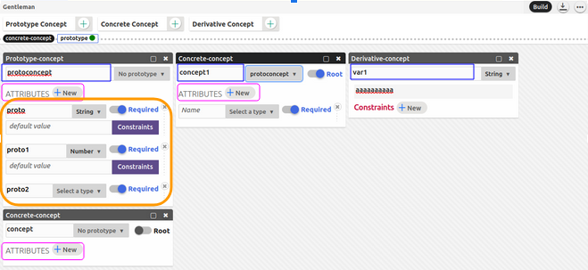
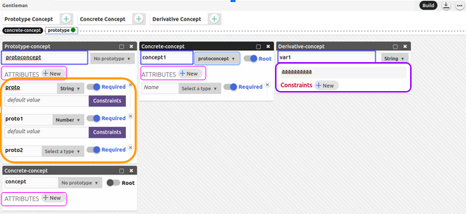

L'import/Export de Gentleman - Problématique
Gentleman est un éditeur projectionnel qui permet d'appeler des objets appelés concepts à partir de l'interface, leur donner facilement des attributs , donner àces attributs des contraintes et lier les concepts en eux par le biais de relation (prototype, derivative concept, avoir une liste d'un certain concept ,référence à un concept etc). Gentleman vise la facilitation de la conceptualisation d'une idée, d'une projet, de concepts. Au lieu de faire des diagrammes de classes afin de comprendre quel concept fait quoi , Gentleman permet d'instancier et surtout visualiser des concepts plus facilement , plus rapidement et plus efficacement.
L'import/Export de Gentleman - Fonctionnement de gentleman
-
D'abord, on commence par définir un concept. Cela peut être un concept prototype, un concept concret ou un concept dérivé qui est comme un enum mais où les éléments de l'énum peuvent être contraint.
- Une fois le type de concept choisi en appuyant sur le bouton soit "Prototype Concept +" , "Concrete Concept +" ou "Derivative Concept +" , on lui donne un nom , et une liste d'attribut et possiblement un prototype (c'est facultatif) dans le cas d'un concept prototype et concret. Et on peut choisir (facultativement) , un root = true si c'est un concept concret qui est parent d'un/d'autres concepts concret.
- On crée un attribut en appuyant sur le bouton "New +" , en lui donnant un nom et un type (qui peut être une string , un "number", un booléen , un set, une référence vers un autre concept, ou 'user-defined' ), et facultativement une ou plusieurs contrainte et facultativement une valeur par défault.
- On peut également déclarer un énum contraint , un concept dérivatif. On crée une variable où le nom est le nom de la variable et la valeur de la variable et on lui donne 0 ou une ou plusieurs contrainte et par la suite on peut appeler cette variable qui contient ces contraintes.
- Voici une démontration en image de ce qui a été décrit plus haut :

 



 




L'import/Export de Gentleman - Objectif
Notre but ici est d'ajouter deux fonctionnalités : L'import ainsi qu'un prototype d'export.
- Gentleman , à la base prend juste des JSONs afin d'importer les concepts avec la projection pour former le rendu gentleman. L'import consiste à avoir un fichier d'un autre type que json , plus précisément : yml , xml , et csv (qui sont des types de fichier assez structurés pour que ce soit faisables) afin de faire l'import des concepts avec une projection par défaut de sorte à avoir le rendu gentleman. Ceci est l'objectif principal de ce projet.
- Gentleman, n'est pas capable de faire l'export. C'est-à-dire , il est présentement impossible de prendre le fichier json que nous redonne Gentleman et le transformer en un autre type de fichier afin de l'utiliser ailleurs sous une autre forme comme xml, csv, ou yml. C'est ce que l'export vise. Notre objectif ici est de faire un prototype d'export de fichier dans gentleman, c'est-à-dire qu'un utilisateur peut créer son prototype gentleman et l'avoir sous forme de csv, yml, xml.